ECG Blog #449 — Phân ly nhĩ thất đồng nhịp?
Điện tâm đồ ở Hình-1 — được ghi ở một người đàn ông 45 tuổi bị đái tháo đường, đang được điều trị sốc nhiễm khuẩn.
CÂU HỎI:
- BẠN sẽ đọc điện tâm đồ ở Hình-1 như thế nào?
- Nhịp là gì?
- Vì sao hình dạng QRS trên dải nhịp chuyển đạo II dài lại thay đổi cách một nhát?

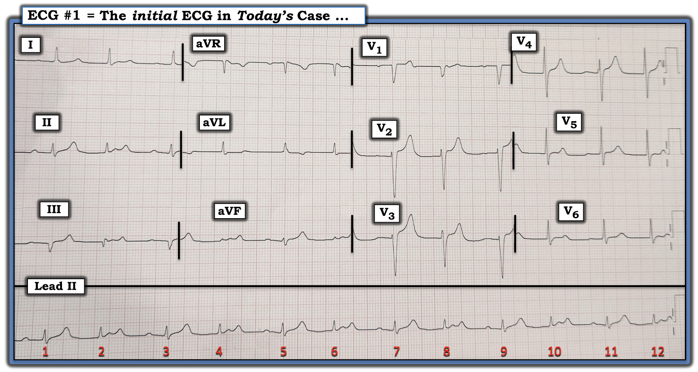
SUY NGHĨ CỦA TÔI về điện tâm đồ ở Hình-1:
Đây là một điện tâm đồ khó đọc vì: i) hình dạng QRS thay đổi; và, ii) khó nhìn thấy hết các sóng P. Dù vậy — tôi đã xác định được nhịp chỉ trong vài giây nhờ các nhận xét sau đây:
- Tất cả các nhát trên điện tâm đồ này đều là nhát trên thất! "Cái hay" của một bản ghi 12 chuyển đạo có kèm dải nhịp chuyển đạo II dài ghi đồng thời — là nó cho phép chúng ta xem từng nhát trong 12 nhát trên bản ghi này ở 3 chuyển đạo khác ghi đồng thời. Làm như vậy khẳng định rằng dù có 2 hình dạng QRS khác biệt rõ trên dải nhịp chuyển đạo II dài (đặc biệt rõ ở chuyển đạo III) — QRS đều hẹp ở cả 12 chuyển đạo. Do đó — nhịp là nhịp trên thất!
- Có nhịp theo nhóm (group beating)! (thấy ở Hình-1 dưới dạng một nhịp đôi (bigeminal), trong đó cùng một khoảng R-R ngắn hơn — rồi cùng một khoảng R-R dài hơn luân phiên nhau suốt bản ghi).
- Có các sóng P đều hiện diện suốt toàn bộ bản ghi. Nhận xét MẤU CHỐT này có thể được xác minh chỉ trong vài giây — đơn giản bằng cách dùng compa đo (calipers) (Xem Hình-2).

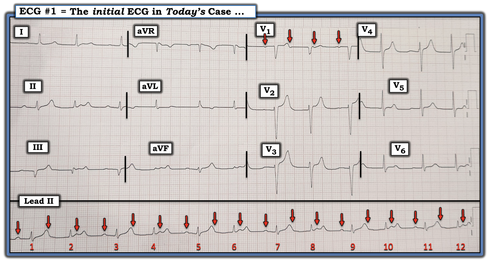
ĐIỂM THEN CHỐT (PEARL) #1: Người thầy thuốc không dùng compa đo để đọc các rối loạn nhịp phức tạp như bản ghi hôm nay — chắc chắn sẽ mất nhiều thời gian hơn để đọc, rồi chỉ để nhận ra rằng họ sẽ không bao giờ chắc chắn về tính đều đặn của hoạt động nhĩ.
- Để đánh giá hoạt động nhĩ tối ưu — tôi chỉ việc đặt compa đo theo khoảng P-P giữa bất kỳ 2 sóng P liên tiếp nào mà tôi nhận ra rõ ràng. Ví dụ, ở Hình-2 — thấy rõ 2 chỗ lệch của sóng P liên tiếp xuất hiện ở cùng một vị trí bên trong mỗi khoảng R-R dài hơn (vì vậy tôi chọn đặt compa đo theo khoảng P-P giữa mũi tên ĐỎ thứ 3 và thứ 4 ở Hình-2).
- Khi đã đặt compa đo theo khoảng P-P này — tôi dễ dàng "dò bước" được các sóng P đều suốt toàn bộ dải nhịp chuyển đạo II dài.
- ĐIỂM THEN CHỐT #2: Lý do bản ghi hôm nay khó đến vậy — là cứ mỗi sóng P thứ 3 lại ẩn rất kỹ trong sóng T của mọi nhát số lẻ. Đây là lúc việc chú ý đến các chuyển đạo ghi đồng thời có thể vô cùng quý giá! Tuy chúng ta không thấy sóng P thứ 3 của mỗi nhóm trên dải nhịp chuyển đạo II dài (vì các sóng P này ẩn trong sóng T của các nhát #1,3,5,7,9 và 11) — chúng ta có thấy một chỗ lệch âm nhỏ xíu "đúng lúc" ngay sau sóng T đầu tiên ở chuyển đạo V1 (mũi tên ĐỎ thứ 2 ở chuyển đạo V1). Điều này khẳng định rằng các sóng P ẩn ở một vị trí tương tự trong sóng T của mọi nhát số lẻ. Do đó — có một nhịp nhĩ đều nền, với sóng P xoang ở tần số ~110/phút.
ĐIỂM THEN CHỐT #3: Nhịp hôm nay không phải là blốc AV hoàn toàn (và cũng không phải là phân ly nhĩ thất đồng nhịp (isorhythmic)). Chúng ta có thể nhanh chóng xác định điều này bằng cách tập trung vào khoảng PR ngay trước phức bộ QRS của mỗi nhát mà kết thúc mỗi khoảng R-R dài hơn (tức là khoảng PR trước các nhát #3,5,7,9 và 11).
- Đánh dấu các sóng P (như chúng tôi đã làm bằng mũi tên ĐỎ ở Hình-2) — giúp quá trình này dễ dàng hơn rất nhiều — và giúp chúng ta nhanh chóng nhận ra rằng tuy khoảng PR trước các nhát #1,3,5,7,9 và 11 kéo dài nhẹ (tức là ~0.22 giây) — khoảng PR này trước mọi nhát số lẻ vẫn không đổi! Do đó — rõ ràng có ít nhất một phần dẫn truyền.
- ĐIỂM THEN CHỐT #4: Mặc dù thấy có nhịp nhĩ đều — số sóng P nhiều hơn số phức bộ QRS (tức là có 18 sóng P đánh dấu mũi tên ĐỎ ở Hình-2 — nhưng chỉ có 12 phức bộ QRS). Điều này có nghĩa là phải có một dạng nào đó của blốc AV độ 2 — vì không phải mọi sóng P đều được dẫn truyền xuống thất.
==================================
ĐIỂM THEN CHỐT #5: Đến thời điểm này trong quá trình đọc — tôi gần như chắc chắn rằng nhịp hôm nay là một dạng nào đó của Wenckebach AV (tức là blốc AV độ 2 Mobitz loại I) — nhờ những thông tin mà 5 Nhận xét đã mô tả ở trên cho tôi biết:
- Nhận xét-1: Phức bộ QRS của mọi nhát ở cả 12 chuyển đạo trong Hình-2 đều hẹp. Do đó — nhịp hôm nay là nhịp trên thất.
- Nhận xét-2: Có nhịp theo nhóm (dưới dạng các khoảng R-R dài hơn rồi ngắn hơn luân phiên nhau). Sự hiện diện của "nhịp theo nhóm" luôn phải gợi ý khả năng dẫn truyền Wenckebach — NẾU đồng thời có một số đặc điểm khác.
- Nhận xét-3: Nhịp nhĩ nền đều (mũi tên ĐỎ ở Hình-2). Biết có nhịp xoang đều giúp loại trừ các nguyên nhân không phải Wenckebach gây nhịp theo nhóm, như nhịp đôi nhĩ.
- Nhận xét-4: Ít nhất một số nhát có được dẫn truyền xuống thất (vì khoảng PR không đổi trước tất cả các nhát kết thúc khoảng R-R dài hơn). Như ĐIỂM THEN CHỐT #3 — vì ít nhất một số sóng P được dẫn truyền xuống thất — điều này loại trừ blốc AV độ 3 (hoàn toàn)!
- Nhận xét-5: Số sóng P nhiều hơn số phức bộ QRS. Điều này có nghĩa là một số sóng P xoang xuất hiện đều đặn không được dẫn truyền (nghĩa là phải có một dạng nào đó của blốc AV độ 2).
NHẬN ĐỊNH CỦA TÔI về điện tâm đồ #1:
5 Nhận xét trên cho thấy các đặc điểm điện tâm đồ đặc trưng cho "Dấu chân của Wenckebach!" — đó là lý do vì sao chỉ trong vài giây nhìn điện tâm đồ hôm nay, tôi đã gần như chắc chắn có một dạng nào đó của Wenckebach AV độ 2 (Xem ECG Blog #164 — ECG Blog #55 — ECG Blog #347 — và ECG Blog #154).
- Dù vậy — tôi chưa chứng minh được các chu kỳ có khoảng PR tăng dần cho đến khi một sóng P xoang đúng lúc bị rớt (như lẽ ra phải thấy trong Wenckebach AV điển hình).
Về mặt Thực hành: Tôi sẽ hài lòng NẾU bạn dừng lại ở đây, khi biết rằng 5 nhận xét trên khiến gần như chắc chắn nhịp hôm nay là blốc AV độ 2 Mobitz loại I ( = Wenckebach AV).
- Vượt ra ngoài phần cốt lõi: Hãy XEM Hình-3 — trong đó tôi đã dùng 3 màu để đánh dấu một kiểu sóng P nhất định trên bản ghi này, kiểu này lặp lại qua 12 nhát trên dải nhịp chuyển đạo II dài. Mỗi màu biểu thị điều gì?

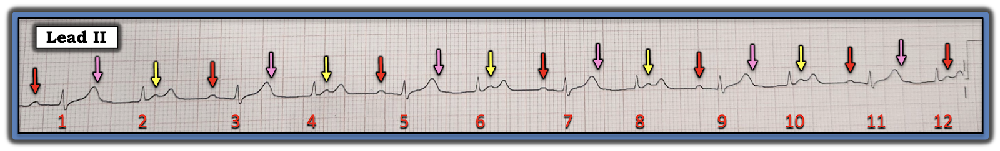
Các Màu ở Hình-3:
Cách dễ nhất để phân tích những gì đang xảy ra ở Hình-3 — là bắt đầu từ các sóng P đánh dấu mũi tên ĐỎ.
- Như đã nêu ở Nhận xét-4 phía trên — các sóng P đánh dấu mũi tên ĐỎ ở Hình-3 đều có cùng khoảng PR 0.22 giây. Do đó — các nhát #1,3,5,7,9 và 11 đều được dẫn truyền với blốc AV độ 1.
- NẾU nhịp ở Hình-3 là Wenckebach AV — thì hoặc các sóng P đánh dấu mũi tên HỒNG hoặc các sóng P đánh dấu mũi tên VÀNG phải không được dẫn truyền. Chẳng phải hợp lý hơn nếu các sóng P đánh dấu mũi tên VÀNG là không dẫn truyền sao? (điều này có nghĩa là các sóng P đánh dấu mũi tên HỒNG sẽ dẫn truyền các nhát #2,4,6,8,10 và 12 với khoảng PR rất dài ~0.38 giây).
ĐIỂM THEN CHỐT #6: 2 đặc điểm cuối cùng cần giải thích về điện tâm đồ hôm nay là: i) Vì sao hình dạng QRS thay đổi nhẹ cách một nhát; và, ii) Phần còn lại của điện tâm đồ 12 chuyển đạo hôm nay cho thấy gì.
- Vì chúng ta biết rằng mọi nhát trên bản ghi hôm nay đều là nhát trên thất (Nhận xét-1 trong ĐIỂM THEN CHỐT #5) — và vì mọi phức bộ QRS đều được dẫn truyền — lý do hình dạng QRS thay đổi nhẹ cách một nhát hẳn phải là kết quả của một mức độ dẫn truyền lệch hướng nào đó. Như đã giải thích trong ECG Blog #211 — một nhát có dẫn truyền lệch hướng hay không phụ thuộc vào tương tác giữa khoảng ghép và khoảng R-R đi trước. Tuy tôi không thấy một dạng chậm dẫn truyền cụ thể nào ở các phức bộ QRS hơi rộng hơn (là các nhát số lẻ) — nhiều khả năng các khoảng R-R khác nhau là nguyên nhân của dẫn truyền lệch hướng.
- Blốc AV độ 2 Mobitz I thường gặp kèm với nhồi máu thành dưới và/hoặc thành sau cấp hoặc mới xảy ra. Dù vậy — tôi cho rằng hình dạng ST-T ở phần còn lại của điện tâm đồ 12 chuyển đạo chỉ cho thấy các bất thường không đặc hiệu (không có giá trị chẩn đoán). Tôi không thấy bằng chứng nhồi máu cơ tim cấp hoặc mới xảy ra trên bản ghi này (nhưng luôn quan trọng phải tìm các dấu hiệu điện tâm đồ của nhồi máu cơ tim thành dưới và/hoặc thành sau mới xảy ra mỗi khi gặp blốc AV độ 2 Mobitz I).
==================================
Minh họa bằng giản đồ bậc thang:
Cách TỐT NHẤT để chứng minh nhịp hôm nay là blốc AV độ 2 Mobitz loại I (Wenckebach AV) — là dựng một giản đồ bậc thang (laddergram), mà tôi minh họa từng bước ở Hình-4 đến -10.

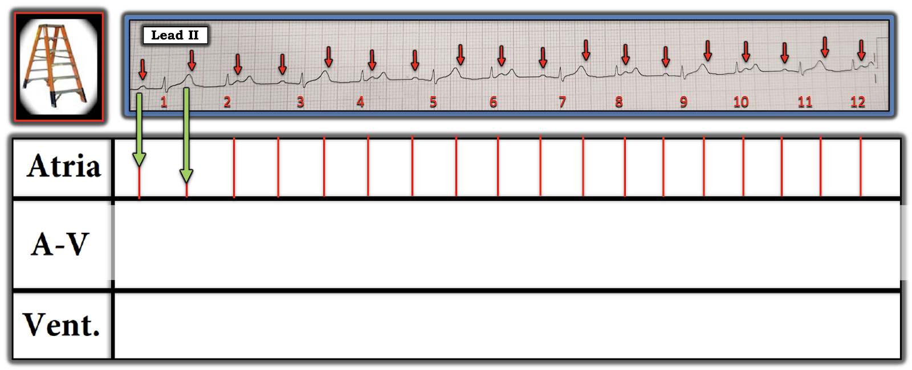

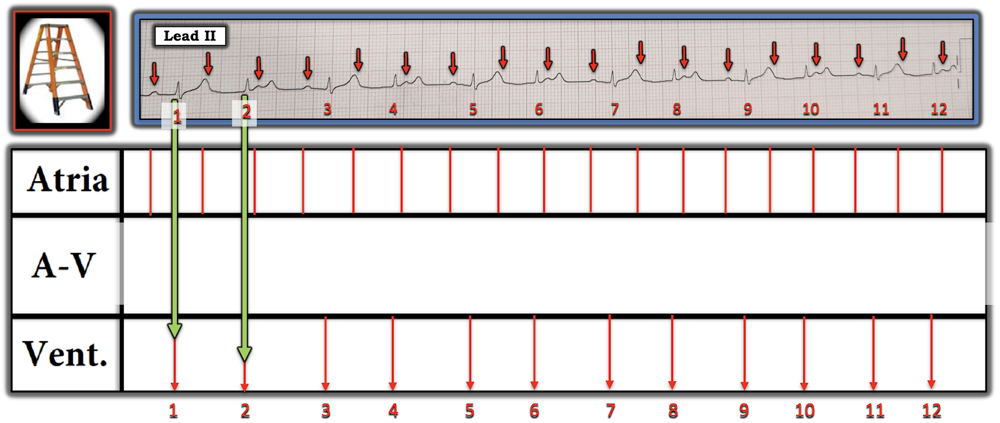

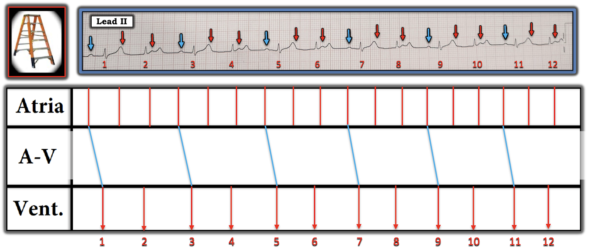

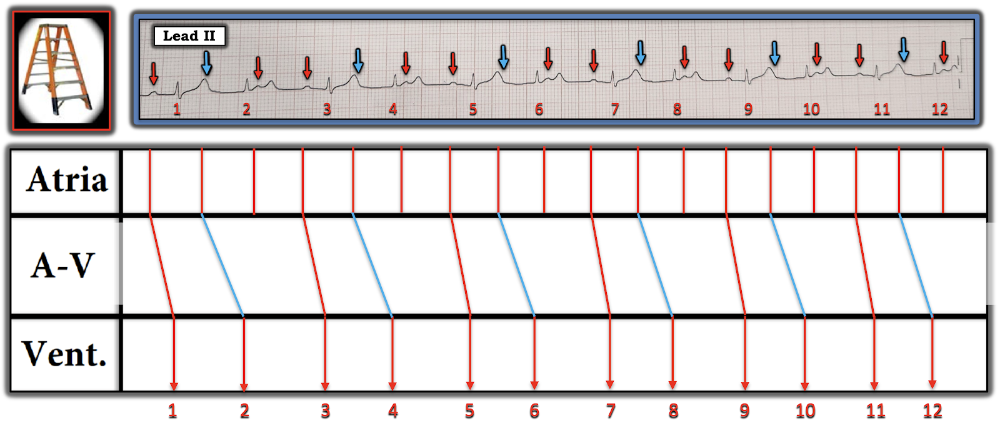

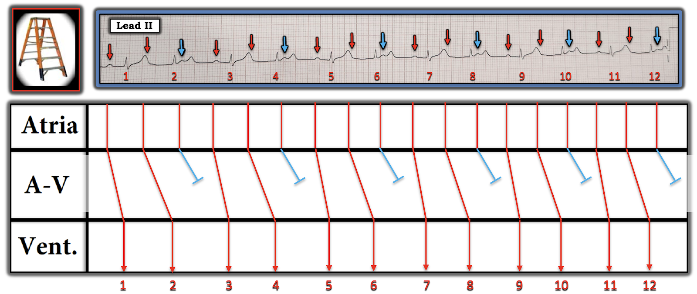

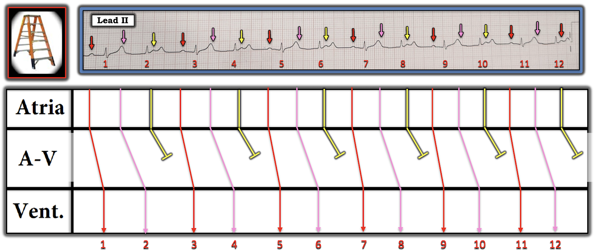

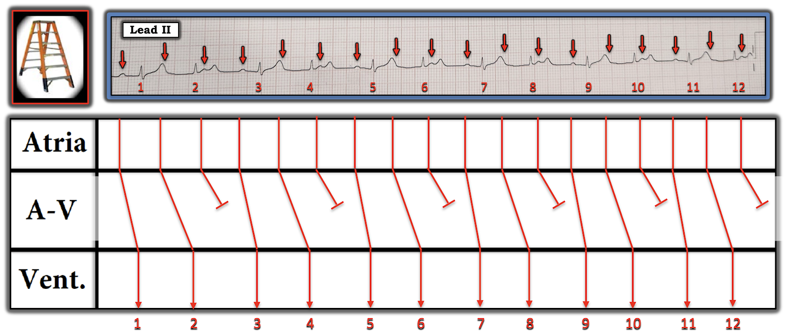
==========================================
Lời cảm ơn: Tôi xin cảm ơn Vansh Verma (từ New Delhi, Ấn Độ) đã cung cấp ca bệnh và bản ghi này.
==========================================

==============================
Các bài ECG Blog liên quan đến ca hôm nay:
- ECG Blog #185 — Hệ thống Ps, Qs, 3R của tôi để đọc nhịp.
- ECG Blog #188 — Ôn lại cách đọc và vẽ giản đồ bậc thang (kèm ĐƯỜNG DẪN tới hơn 100 ca có giản đồ bậc thang — nhiều ca có minh họa tuần tự từng bước).
- ECG Blog #205 — Ôn lại Cách tiếp cận hệ thống của tôi để đọc điện tâm đồ 12 chuyển đạo.
================================
- ECG Blog #192 — 3 Nguyên nhân gây phân ly nhĩ thất.
- ECG Blog #191 — Phân ly nhĩ thất so với blốc AV hoàn toàn.
- ECG Blog #389 — ECG Blog #373 — để ôn lại một số ca minh họa "giải quyết vấn đề blốc AV".
- ECG Blog #236 — một ECG Video Pearl về 3 loại blốc AV độ 2.
- ECG Blog #344 — ôn lại kỹ lưỡng các loại blốc AV độ 2 (Mobitz I so với Mobitz II so với blốc AV 2:1).
- ECG Blog #267 — Ôn lại, bằng các giản đồ bậc thang từng bước, cách suy luận một ca Mobitz I có nhiều hơn một cách giải thích khả dĩ.
- ECG Blog #164 — Giản đồ bậc thang từng bước của Mobitz I.
- ECG Blog #195 — ôn lại phân ly nhĩ thất đồng nhịp.
PHẦN BỔ SUNG (ngày 2 tháng 10 năm 2024) — Dựa trên câu hỏi của Akash
Dành cho những bạn đọc thích thử thách vẽ giản đồ bậc thang — tôi quyết định đăng câu hỏi mà Akash (trong phần Bình luận bên dưới) gửi cho tôi.
- Như tôi vẫn thường nhấn mạnh — đôi khi có thể có nhiều hơn một cách giải thích khả dĩ cho cơ chế của một rối loạn nhịp phức tạp!
- NẾU bạn có thể "vẽ" ra giả thuyết của mình cho một cơ chế có vẻ hợp lý — thì hãy coi như bạn đã đúng khi đề xuất một cơ chế thay thế (trong trường hợp đó — cách duy nhất để xác minh cơ chế đề xuất nào là đúng cho ca đang xét là thăm dò điện sinh lý (EP)).
- Lý do tôi thấy đáng đăng câu hỏi xuất sắc của Akash — là nó minh họa quá trình giải quyết vấn đề với các nhịp phức tạp, trong đó tôi phải "thử" với vài lời giải giản đồ bậc thang có vẻ hợp lý cho đến khi tìm ra được một lời giải đúng.
Đây là câu hỏi của Akash (mà tôi chép lại từ phần Bình luận bên dưới):
==================================
Chào Bác sĩ Grauer!
Em đã theo dõi (và học hỏi) âm thầm từ lâu, giờ mới lần đầu đăng bình luận.
- Đây có thể là blốc AV 2:1 không?
- Sóng P đầu tiên (đánh dấu bằng mũi tên ĐỎ ở Hình 3) được dẫn truyền (dù với khoảng PR hơi kéo dài).
- Sóng P tiếp theo (sóng ẩn trong sóng T = mũi tên HỒNG) không được dẫn truyền.
- Phức bộ QRS được đánh dấu nhát #2 là một nhát thoát bộ nối.
- Sóng P thứ ba (mũi tên VÀNG) không dẫn truyền được — vì nó gặp hệ thống dẫn truyền phía xa đang trong thời kỳ trơ (do nhát thoát bộ nối).
Đây có phải là một cách giải thích hợp lý cho nhịp này không? Em chắc là mình đang bỏ sót điều gì đó, nhưng không rõ đó là gì. Mong Bác sĩ Grauer chỉ giáo!
Trân trọng — Akash
==================================
TRẢ LỜI CỦA TÔI gửi Akash:
Câu hỏi của bạn, Akash, quả thật rất hay — và thực ra tôi cũng đã nghĩ tới lời giải bạn đề xuất khi mới bắt đầu phân tích ca này.
- Tuy nhiên vấn đề là — nếu sóng P thứ 2 (mũi tên VÀNG đầu tiên ở Hình-11) không được dẫn truyền do blốc AV 2:1 và nếu nhát #2 là một nhát thoát bộ nối — thì điều đó có nghĩa là bạn đang đề xuất một tần số thoát bộ nối gia tốc (vì khoảng R-R trước nhát #2 mà bạn đề xuất là bộ nối = 3.7 ô lớn — tương ứng với tần số thoát bộ nối gia tốc ~81/phút).
- Và — điều này có nghĩa là, trừ khi bị ức chế bởi một nhát dẫn truyền từ xoang — nhát thoát bộ nối kế tiếp sẽ xuất hiện 3.7 ô lớn sau đó = tại chỗ tôi đặt vòng tròn XANH. Nhưng vì sóng P xoang kế tiếp sẽ xuất hiện đúng tại vị trí của mũi tên ĐỎ thứ 3 — chúng ta có thể thấy nhát bộ nối kế tiếp này sẽ ngăn sóng P xoang thứ 3 dẫn truyền .... (Bạn sẽ phải đề xuất rằng nhịp bộ nối gia tốc đã "chiếm lấy" nhịp — điều mà tôi không kỳ vọng, khi khoảng PR trước các nhát #1,3,5,7,9,11 không đổi và ở mức hợp lý).
- T.B. (P.S.): Nhịp bộ nối gia tốc và nhịp nhanh bộ nối có thể xảy ra — nhưng tương đối ít gặp ở người lớn trừ khi có nguyên nhân nền nào đó (tức là thiếu máu cục bộ, sốc, rối loạn điện giải, sau phẫu thuật tim, v.v.).
ĐIỀU CỐT LÕI: Tôi cho rằng khó có khả năng đây là blốc 2:1 với một nhịp bộ nối gia tốc "chiếm quyền" (usurping). Tôi cũng cho rằng giản đồ bậc thang mà tôi dựng ở Hình-10 hoàn toàn hợp lý cho blốc AV độ 2, Mobitz loại I ( = Wenckebach AV).

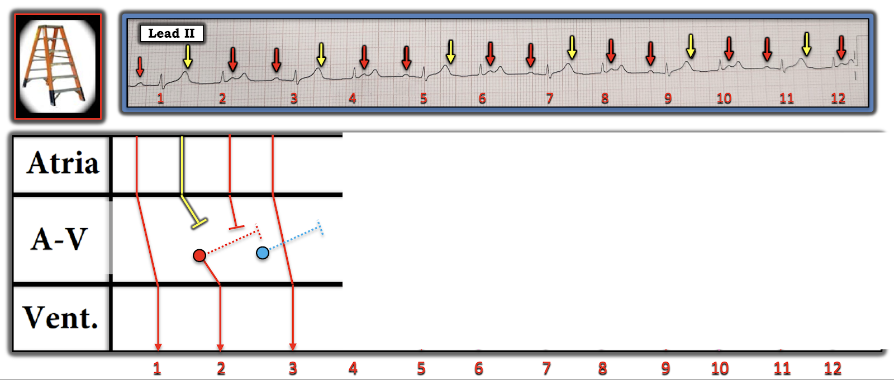